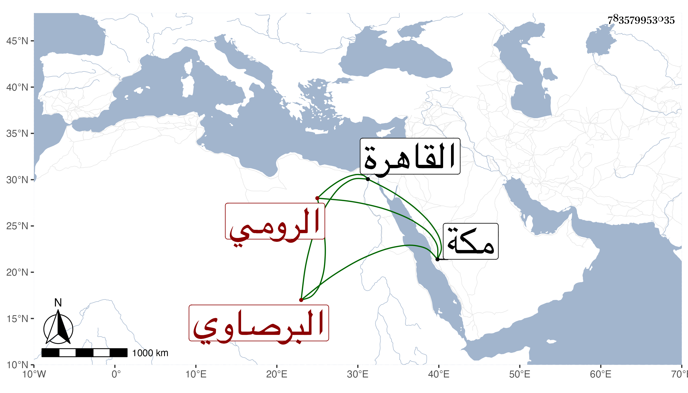

0902Sakhawi.DawLamic.ITO20230111-ara1.EIS1600.783579953035
Biography ID: 783579953035
651
مصطفى بن محمود بن رستم الرومي البرصاوي أحد أعيان التجار والماضي أبوه ويعرف بين التجار بتاجر السلطان ممن يكرمه لكون أبيه كما تقدم تاجره وتسكرر إنمامه عليه وسمعت من يصفه بمزيد الشح والتهافت وعدم الاهتداء لشيء من أمور الدين بل هو يابس المعاملة زائد الحرص لين الجانب أقام بمكة سنين وكنت ممن يراه بها في سنة أربع وتسعين ولم أقبل عليه ، وهو الآن سنة تسع وتسعين بالقاهرة من مدة سنين .
